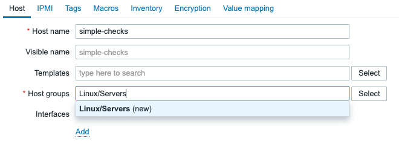

Hosts
After reading the previous dataflow section, it is now clear we have to go through the dataflow steps to get from collecting data to sending out alerts. The first part of the dataflow is to create a host, so that is what we are now going to tackle in this part.
Creating a host
As we mentioned, Hosts in Zabbix are nothing more than a container (not the Docker kind).
They contain our Items, Triggers, graphs, Low Level Discovery rules and Web scenarios.
At this point, we should create our first monitoring host in Zabbix. Navigate to Data collection | Hosts
and in the top right corner click on the Create host button. This will open up the following modal window:
 4.3 Empty host creation window
4.3 Empty host creation window
There are a lot of fields we can fill in, but few are important to note here specifically.
- Host name
- Host groups
These are the only two mandatory fields in the host creation window. If we fill these two, we can create our host.
Host name
The Host name is very important. It functions as both the technical name of the host we will
use in various different locations, but it is also used as the Visible name by default. This
means that we will work with this name to find through filters this host with its associated data.
Make sure to select a host name that is short and descriptive. For example:
- linux-srv01-prd
- www.thezabbixbook.com
- docker-container-42
- db-srv10 - Website database
The best practise is to keep the host name the same in Zabbix as it is configured on your monitoring target. The monitoring target, being whatever you are trying to monitor. Whether that is a physical or virtual server, a website, a database server or a specific database on that database server. Every host in Zabbix is a monitoring target, i.e. something you are trying to monitor.
Visible name
Now, we didn't mention it as it is not a mandatory field. Nevertheless, we need to discuss
the Visible name field before we continue with the Host groups. Although not mandatory,
as I mentioned, the Host name is automatically used as the visible name when not filled in.
Many of us see a form style list and have the need to fill out everything there is to fill out. This should not be the case with forms like the host creation window in Zabbix. We are only trying to fill out everything we should be configuring. As such, since the visible name is not mandatory, I do not fill it out. Unless, there is an actual need to use the field.
The visible name was added in Zabbix as the host name and visible name fields in Zabbix use different character encoding in the Zabbix database.
Host name = UTF8 and supports alphanumeric, dashes, underscores and spaces (not leading or trailing).
Visible name = UTF8_MB4 and supports special characters like √ß and even emojis like üëÄ.
This is the main difference. When you want to use a local language for example you could do:
Host name = sherbimi-central
Visible name = shërbimi-çentral
That way you keep your local language in the frontend, but the technical name doesn't include the special character. Keep in mind however, that this can create confusion. You now need to remember two different names for the same host. As such, visible names are only recommended when you really need them or if you are trying to work around something. Otherwise, there is not need to use them.
Host groups
In Chapter 02 of the book, we had a deep dive into setting up various different host groups to keep
our Zabbix environment structured. When we create a host, we can now start using on of
our created host groups. Keep in mind, to only add the host to the lowest level of the subgroups. For
example when we have Servers and Servers/Linux, we will only add our host to Servers/Linux.
It's also possible to create a host straight from the host creation window. To do so,
simply start typing the host group name into the Host groups field and it will ask you if
you want to create the host group.

4.4 Host creation - new host group
Let's add the host simple-checks in the Linux/Servers host group.
Note
It's recommended to read the simple checks recipe from here, as it contains useful tips on creating good items.